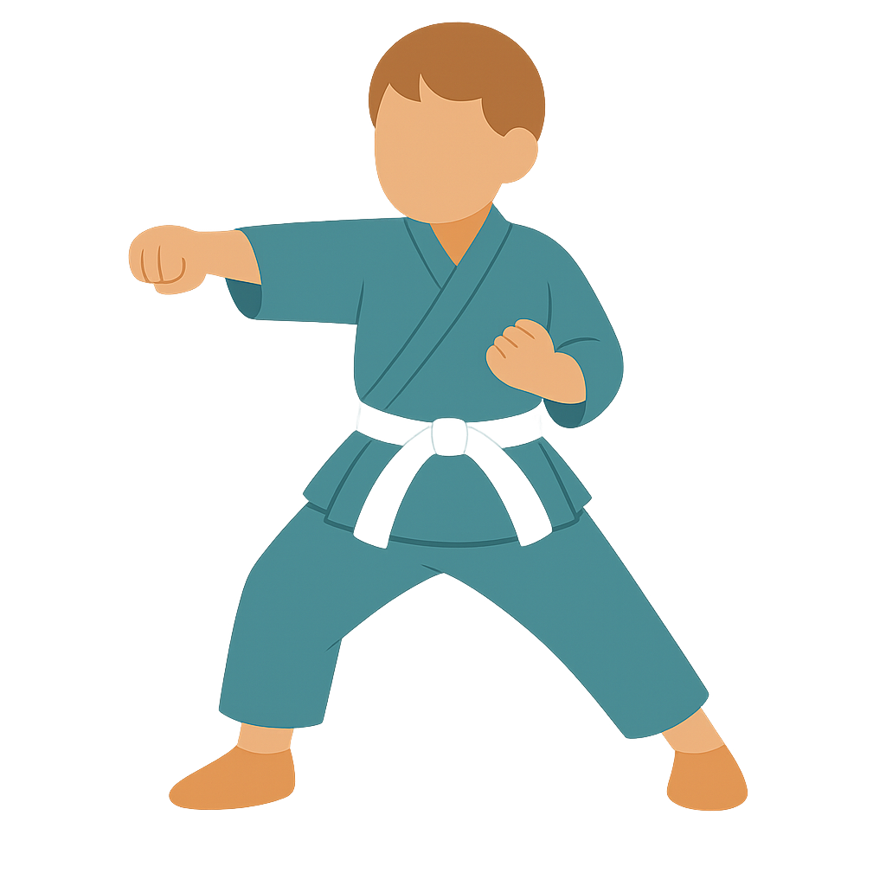
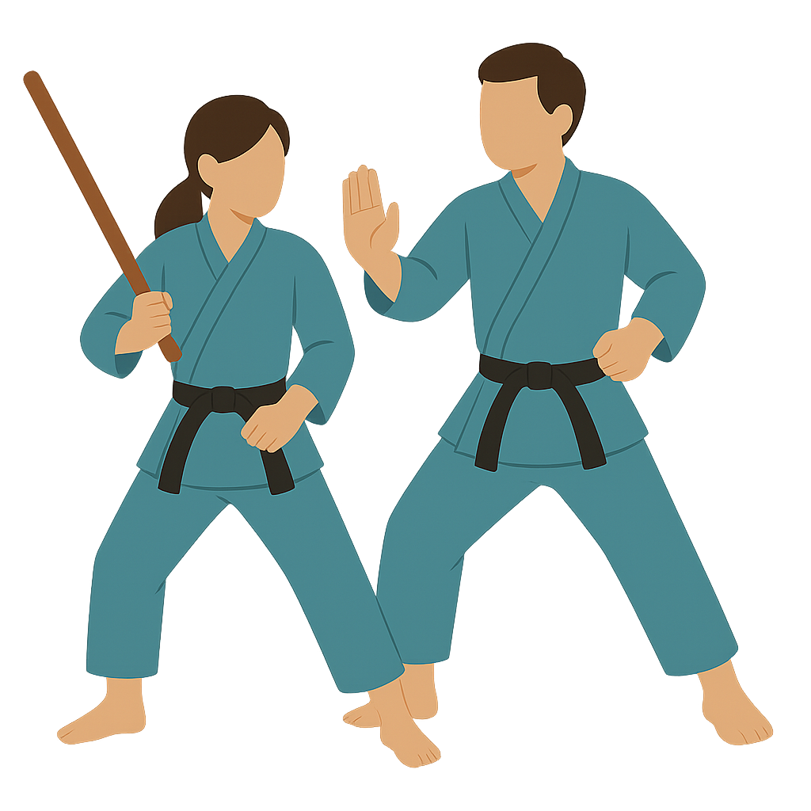
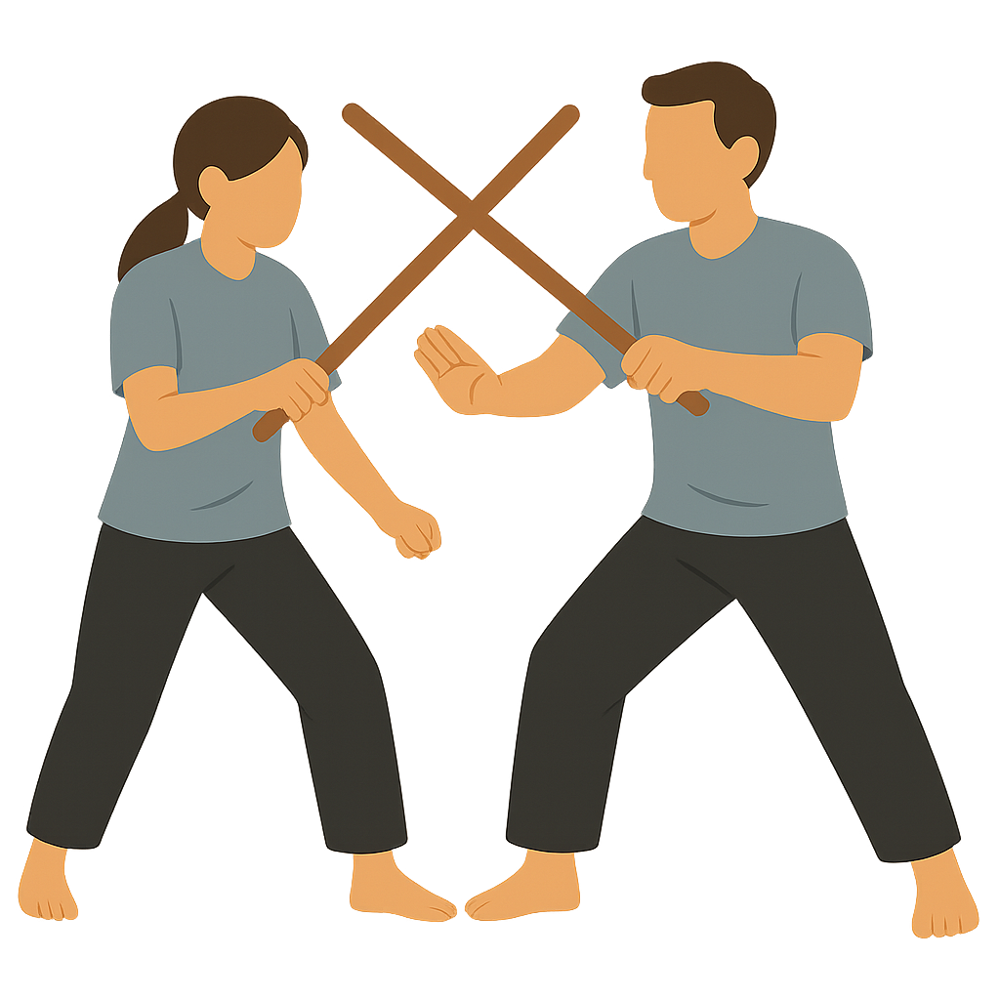
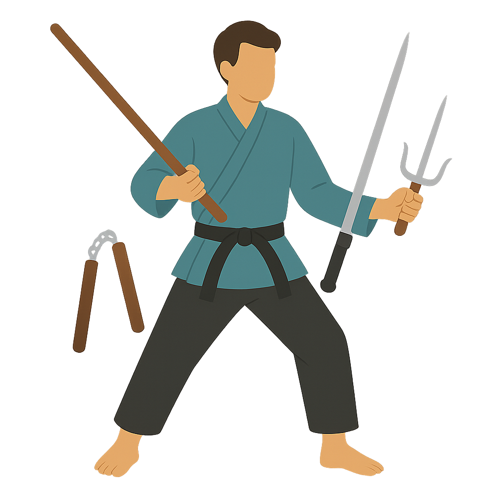

01For kids
Kids Karate
Energetic, structured classes that develop focus, listening skills, respect, and confidence while building the fundamentals of karate.
Task Karate / Programs
Every program shares the same foundation: focused practice, respect for training partners, and progress earned over time.
Choose your lane
You do not have to know every answer before your first class. These are the main ways people train at Task Karate. If you are unsure, ask us.

01For kids
Energetic, structured classes that develop focus, listening skills, respect, and confidence while building the fundamentals of karate.

02For teens & adults
Build strength, skill, and confidence through a clear path from fundamentals to advanced training. Come as you are.

03Filipino martial arts
Training in timing, distance, coordination, and control through the Inayan System III tradition.

04For eligible students
A focused next step for students who are ready to add weapons practice to their training. Ask your instructor about fit.
Not sure where to start?
Age, experience, and goals all matter. Contact the school and we can point you toward the most comfortable first class.
Show up curious. We will help with the rest.
Contact the school →